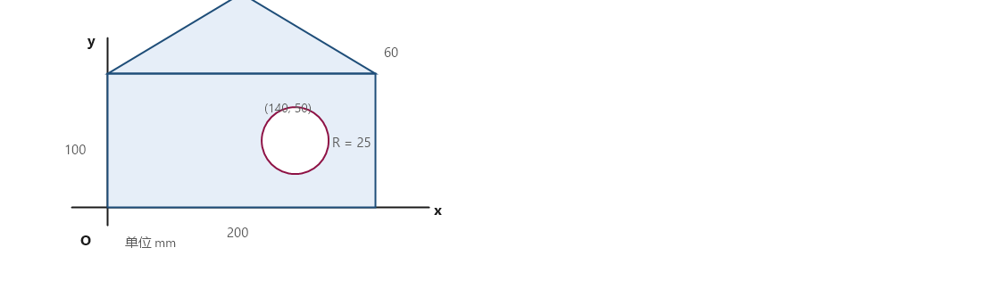

1试卷（题目）
闭卷，120 分钟，满分 100 分。g = 9.81 m/s²。受力图、剪力图与弯矩图必须画出，未画图按比例扣分；结果保留 3 位有效数字。
一、（8 分）量纲与单位
圆轴扭转角 θ = TL/(JG)。(a) 用长度 L 与力 F 表示 J 的量纲；(b) 写出 J 的 SI 单位与 US 单位；(c) 把 1 kip·ft 换算成 N·m；(d) 某截面 J = 5.2×10⁶ mm⁴，用 m⁴ 表示是多少？
二、（12 分）力矩与等效力系
力 F = 250 N 作用于点 A(0.4, 0.3) m，方向沿 3-4-5 方向（4 向右、3 向下）。求：(a) F 对原点 O 的矩；(b) F 对 B(0.7, 0) m 的矩；(c) 把 F 等效到 O 点的力–偶系统；(d) F 的作用线与 x 轴的交点坐标。
三、（14 分）平面平衡
均质梁 AB 长 6 m、质量 80 kg，A 端铰支，B 端由与水平成 30° 的钢索拉住；距 A 4 m 处挂 200 kg 的重物。求钢索张力 T 与 A 处反力；若钢索许用拉力为 4.0 kN，判断是否安全。

四、（12 分）三维力
钢索由 A(0, 0, 5) m 拉到 D(3, 4, 17) m，张力 T = 260 N。求：(a) 力矢量 F；(b) F 与 z 轴的夹角、F 在 x-y 平面内的投影大小；(c) F 对原点 O 的矩；(d) F 对 x 轴与 z 轴的矩，并说明 Mz = 0 的原因。
五、（14 分）桁架
桁架如图：4 格 × 4 m、高 3 m，A 为铰支、E 为滚支，F 与 H 各作用 20 kN 的竖向力。用节点法求 AF、AB，用截面法求 CD、FG、CG，并指出零杆。

六、（12 分）机构
水平杠杆 AB 长 1.2 m，A 端铰支；B 端通过二力杆 BC 连到墙上的 C 点，C 在 A 正上方 0.9 m。B 端受竖直向下的力 P = 400 N。求二力杆 BC 的内力与 A 处反力。

七、（12 分）形心
组合截面如图（单位 mm）：矩形 200 × 100，其上方为底 200、高 60 的等腰三角形；在 (140, 50) 处挖去半径 25 的圆孔。求形心坐标 (x̄, ȳ)。

八、（16 分）剪力图与弯矩图
简支梁 AB 长 8 m，A 为铰支、B 为滚支。0–6 m 作用 4 kN/m 的均布载荷，x = 6 m 处作用 20 kN 集中力，x = 2 m 处作用 12 kN·m 顺时针力偶。求支座反力，画 V、M 图，并求 |M|max 及其位置。

一、（8 分）
- SI：m⁴；US：in⁴（lb·in·in ÷ lb/in² = in⁴）
- 1 kip·ft = 1000 × 4.448 N × 0.3048 m = 1356 N·m ≈ 1.36 kN·m
- J = 5.2×106 mm4 × 10-12 m4/mm4 = 5.2×10-6 m4
二、（12 分）
- (c) 等效到 O：F = 250 N（方向不变）+ 120 N·m 顺时针力偶
三、（14 分）
- T / [T] = 3.40/4.0 = 85% < 1 ⟹ 安全
四、（12 分）
- Mx = −400 N·m；Mz = 0——作用线通过 z 轴上的 A 点，与该轴相交，故对 z 轴之矩为零
五、（14 分）
- 对称：RA = RE = 20 kN
- 截面法：切 FG、CG、CD，取左段（含 A、B、F）
零杆更快：节点 G 上 FG 与 GH 共线且无外载，CG 必为零杆。
六、（12 分）
- A 处反力 533 N、水平向左；Ay = 0 是「C 在 A 正上方」这一几何条件造成的
七、（12 分）
- A1 = 200×100 = 20 000，形心 (100, 50)
- A2 = ½×200×60 = 6 000，形心 (100, 100 + 60/3) = (100, 120)
- A3 = −π(25)2 = −1 963.5，形心 (140, 50)
八、（16 分）
- V：+18.5(A) → +10.5(x=2 −) → +10.5(x=2 +, 力偶不改变 V) → −5.5(6 −) → 跳 −20 → −25.5 → 0(B)
- M：0 → +29(2 −)；跳 +12 → +41；峰值 +54.8(x = 4.625)；x = 6 处 +51；B 处 0
评分要点：受力图/内力图各 2–4 分；反力 3 分；内力表达式与关键值 5–6 分；极值与位置 3 分。